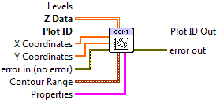
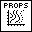
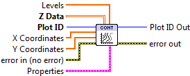

Contour Plot¶
Contour plots are made from 2D arrays, and consist of a series of lines mapping out constant-value levels. This VI only generates the lines themselves; see Filled Contour Plot for generating colored regions between lines.
By default, contours are plotted with black lines. Positive values are plotted with solid lines, negative values with dashed lines. Set Line.Style to Solid to override this.
This is a polymorphic VI; you can choose between automatically generating a specific number of contour levels (Contour Plot (Automatic)) and manually specifying the contour levels you want (Contour Plot (Manual)).
The instance may be selected, or will change depending on the data type wired to Levels; an integer specifying the number of levels will select automatic contouring, while an array explicitly specifying the levels will select manual contouring.
Data must be of shape 2x2 or larger to make a contour plot.
Contour Plot (Automatic)¶
Make a contour plot, with N automatically chosen levels (Levels input), defaulting to 10. You can optionally set the min and max data values to contour via the Contour Range terminal.

 Plot ID/Plot ID Out
Plot ID/Plot ID Out- Plot identifier. Plot ID Out always contains the same value as Plot ID.
 Z Data
Z Data- 2-D array for which to generate contours. The first (slowest-varying) dimension is plotted along the Y axis; the second (fastest-varying) dimension is plotted along with X axis.
 X Coordinates
X Coordinates- Optional 1-D array giving X axis coordinates. Defaults to 0..NX-1, where NX is the size of Z Data‘s second dimension.
- Y Coordinates
- Optional 1-D array giving Y axis coordinates. Defaults to 0..NY-1, where NY is the size of Z Data‘s first dimension.
- Levels
- Number of contours to automatically generate (default 10).
 Contour Range
Contour RangeControls the limits within which contours will be plotted.
 Min Level
Min Level- Only plot contour levels for data with this value or higher.
- Max Level
- Only plot contour levels for data with this value or lower.
-  Properties
Property cluster, available under the “Properties” subpalette.
 Label Contours
Label Contours- If True, label the contours with their values. Default is False.
- Line
Controls the appearance of the contour lines.
 Style
Style- Line style (solid, dashed, etc.). Default is to automatically select an appropriate style.
 Color
Color- Line color. May be a PlotColor or LabView color.
 Width
Width- Line width, in font points (1/72 inch).
- Display
Controls the overall appearance of the contour plot.
- Alpha
- Alpha blending value for this object (0.0 to 1.0). Default is 1.0 (fully opaque).
- Z Order
- Stacking order. Default is chosen based on the object type.

 Error In/Out
Error In/Out- Terminals for standard error functionality.
Contour Plot (Manual)¶
Make a contour plot, with contours explicitly specified via a 1D array wired to the Levels terminal.
- Plot ID/Plot ID Out
- Plot identifier. Plot ID Out always contains the same value as Plot ID.
- Z Data
- 2-D array for which to generate contours. The first (slowest-varying) dimension is plotted along the Y axis; the second (fastest-varying) dimension is plotted along with X axis.
- X Coordinates
- Optional 1-D array giving X axis coordinates. Defaults to 0..NX-1, where NX is the size of Z Data‘s second dimension.
- Y Coordinates
- Optional 1-D array giving Y axis coordinates. Defaults to 0..NY-1, where NY is the size of Z Data‘s first dimension.
- Levels
- Values at which to draw contours.
- Properties
Property cluster, available under the “Properties” subpalette.
- Label Contours
- If True, label the contours with their values. Default is False.
- Line
Controls the appearance of the contour lines.
- Style
- Line style (solid, dashed, etc.). Default is to automatically select an appropriate style.
- Color
- Line color. May be a PlotColor or LabView color.
- Width
- Line width, in font points (1/72 inch).
- Display
Controls the overall appearance of the contour plot.
- Alpha
- Alpha blending value for this object (0.0 to 1.0). Default is 1.0 (fully opaque).
- Z Order
- Stacking order. Default is chosen based on the object type.
- Error In/Out
- Terminals for standard error functionality.
Example¶
Download Contour Plot.vi,
or see Examples for a complete list of examples.
Axis Types¶
Both Contour Plot (Automatic) and Contour Plot (Manual) may be used with rectangular axes only. Use with polar axes will result in 402905 - Operation Not Supported for Polar Plot. Likewise, only linear scales are supported. Use with log or symlog axes will result in 402906 - Operation Not Supported for Axis Scale.
Errors¶
Other information¶
If an empty Z Data array is provided, or an array smaller than 2x2, both VIs do nothing.
A zero value for Levels (Automatic) or an empty array (Manual) will result in the whole plot being shaded a uniform color. A negative value (Automatic) will result in the default number of contours being displayed.
The maximum number of levels is 500. Requests for more than 500 levels will be silently clipped to 500 (Automatic), or the first 500 levels in the array (Manual).
If a non-finite value appears in X Coordinates or Y Coordinates, the corresponding row or column of Z Data is not displayed.
If the size of X Coordinates or Y Coordinates does not match the size of the corresponding axis for Z Data, only the overlap is displayed. A zero-sized array for either will result in the default coordinates being used (0..N-1).
A non-finite value for Contour Range.Min Level or Contour Range.Max Level will result in the default value (min or max of Z Data) being used.
A non-finite value in Z Data will appear as a “hole” or artifact in the contours.